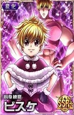

Selecione seu caçador
-

- 
Gon
Gon Freecss é um menino alegre e aventureiro que cresceu na Ilha da Baleia aos cuidados de sua tia Mito. Ele seguiu sua vida acreditando que seus pais haviam morrido em um acidente, mas descobre que isso não era bem a verdade após ser salvo de um ataque animal na floresta por Kaito, um Hunter profissional, aprendiz de seu pai.